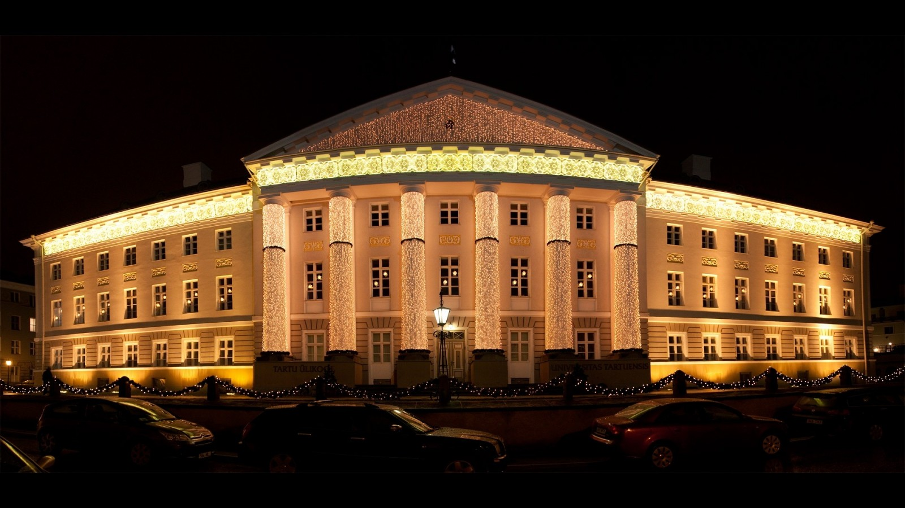
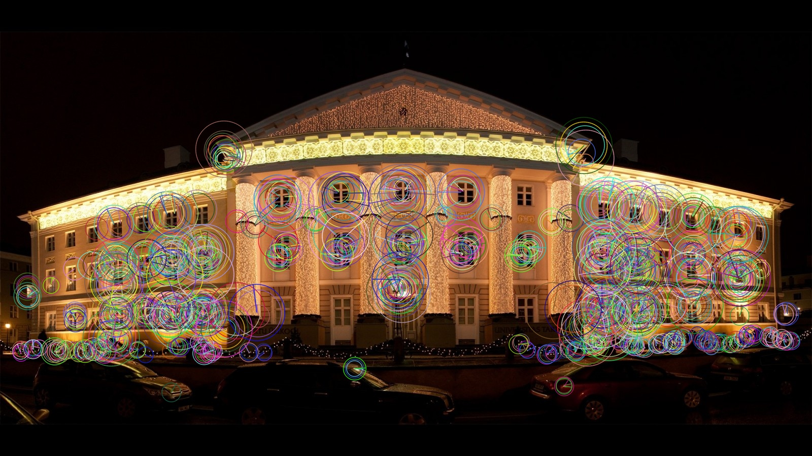

In many Computer Vision applications, we often need to identify interesting stable points in an image. These points are called keypoints or feature points. There are several keypoint detectors implemented in OpenCV ( e.g. SIFT, SURF, and ORB).
we will use the ORB feature detector because it was co-invented by my former labmate Vincent Rabaud. Just kidding! We will use ORB because SIFT and SURF are patented and if you want to use it in a real-world application, you need to pay a licensing fee. ORB is fast, accurate and license-free!

# Import Necessary library
import cv2
import numpy as np
# Load input image and convert to grayscale
image = cv2.imread('palace.jpg')
gray = cv2.cvtColor(image, cv2.COLOR_BGR2GRAY)
# Create ORB , we can specify the number of key points we desire. Here we set to 1000.
orb = cv2.ORB_create(1000, 1.2)
# Obtain descriptors and new final keypoints using ORB
keypoints, descriptors = orb.detectAndCompute(gray, None)
print("Number of keypoints Detected: ", len(keypoints))
# Draw rich key points on input image
image = cv2.drawKeypoints(
image, keypoints, None, flags= cv2.DRAW_MATCHES_FLAGS_DRAW_RICH_KEYPOINTS)
# Store Image
cv2.imwrite("ORB.jpg", image)
Output Image will be:
